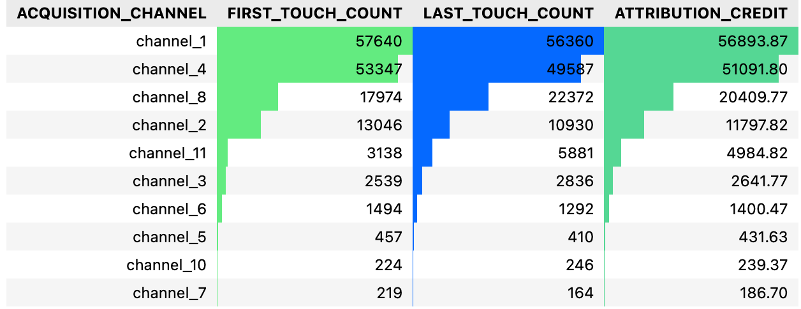

Attribution Model with Python
Problem 1:
Analyze the multi-touch attribution using the campaign_touchpoints.csv dataset.
The goal is to attribute the conversions to different marketing touchpoints effectively.
1) Implement a linear attribution model where each touchpoint shares equal credit for a conversion.
2) Calculate the attributed conversions for each channel.
3) Calculate the attributed conversions for each campaign.
Solution
Solution
Problem 2:
Evaluate first touch, last touch and multi-touch attribution models using the homepage_visits.csv dataset.
Solution
Solution

Analysis
Top Acquisition Channels:
- Channel 1 has the highest attribution credit (56,893.87), making it the dominant channel in the dataset.
- Channel 4 follows closely behind with 51,091.80 in attribution credit.
Discrepancies Between First-Touch and Last-Touch:
- Channel 8 has a significant shift (+4,398) from first-touch to last-touch, indicating it is more effective at closing conversions rather than initiating them.
- Channel 11 also shows a notable shift (+2,743), suggesting its role in finalizing conversions rather than early acquisition.
- Channel 2 and Channel 1 are relatively stable, meaning their role in conversions is more balanced across the funnel.
First-Touch vs. Attribution Credit:
- Channels 1, 4, and 2 have higher first-touch counts than their attributed credit, meaning these channels may be good at generating initial traffic but could be losing conversions later.
- Channels 8 and 11 have lower first-touch counts than their attribution credit, suggesting that they contribute more effectively in later-stage conversions.
Last-Touch vs. Attribution Credit:
- Channel 8 (+1,962) and Channel 11 (+896) have higher last-touch counts than their attribution credit, reinforcing their strong role in finalizing conversions.
- Channel 1 (-533) and Channel 4 (-1,504) have lower last-touch counts compared to attribution, indicating that their impact might be spread across multiple touchpoints instead of acting as the final interaction.
Recommendations:
- Optimize Early-Stage Channels (Channel 1, Channel 4, Channel 2): These channels drive strong initial engagement, so focus on improving retention and conversion strategies.
- Leverage Closing-Stage Channels (Channel 8, Channel 11): Since they perform well in the last touch, consider allocating budget for retargeting and remarketing campaigns.
- Analyze Attribution Models Further: The discrepancy between first-touch, last-touch, and linear attribution suggests deeper funnel insights can be explored. It would be interesting to analyze user's journeys to complement the analysis.